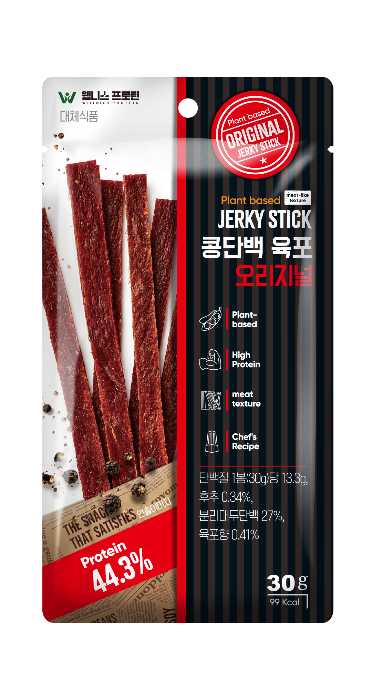
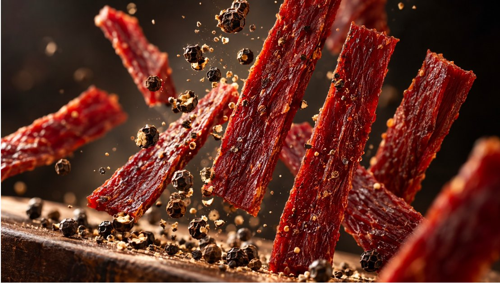

식물성 고단백 식품을 맛있고 간편하게 일상에서 즐길 수 있도록 만드는 브랜드. 지금까지 정리한 아이덴티티, 소구점, 슬로건, 뱃지, 브랜드 하이어라키 제안을 한 페이지로 모았습니다.
식물성 고단백 식품을 맛있고 간편하게 일상에서 즐길 수 있도록 만든다.
※ 미션은 육포뿐 아니라 향후 비페코에서 출시할 제품들을 아우를 수 있도록 작성했습니다. 코어밸류의 디테일한 수치(44g, 13.3g 등)는 제품·분석 결과에 따라 변경될 수 있습니다.
코어밸류와는 별개로, 현재 육포 제품에 한정된 실행 우선순위입니다. TASTE FIRST → EVERYDAY WELLNESS 흐름과 본질적으로 같은 구조입니다.
오리지널맛 기준 — 왼쪽은 현재 제품 실사진, 오른쪽은 영문 슬로건·국문 슬로건·수치 기반 뱃지를 적용한 전면 레이아웃 예시입니다. (디테일 요소 생략됨)


오리지널맛 영양정보(30g당) 기준. 나트륨 321~385mg(100g 환산 약 1,070~1,283mg)으로 "저나트륨"이라 부를 수치가 아니며, "소브산칼륨(보존료)"가 포함되어 "무첨가"도 표기 불가합니다.
| 표기 | 가능 여부 | 근거 |
|---|---|---|
| 동물성 원료 0% | 추천 | 원재료표상 동물성 원료 전혀 없음 — All Plant와 같은 근거를 한글 수치로 직관화 |
| 콜레스테롤 0mg | 추천 | 동물성 원료(육류·유지방 등) 미사용으로 콜레스테롤 성분 자체가 없음 |
| All Plant / 100% Plant | 가능 | 원재료표상 동물성 원료 없음 (현재 Plant-based 표기에서 상향 권장) |
| High Protein | 가능 | 100g당 단백질 44g |
| 저나트륨 | 불가 | 100g 환산 약 1,070~1,283mg |
| 무첨가 | 불가 | 소브산칼륨(보존료) 포함 |
결론: 육포 제품의 브랜드명은 "웰니스 프로틴"이 아니라 "비페코"로 가는 것을 제안합니다. (육포 제품에 한정된 제안)
"웰니스 프로틴"은 이름이 길어 기억에 남지 않고 ("웰프"?) 영양제·건강기능식품 회사 브랜드로 오인됨
영양·기능을 브랜드명에 직접 넣기보다, 비페코 특유의 어감(식감·먹는 즐거움을 연상시키는 음률)을 살리고 영양·기능은 코어메시지·패키지 카피로 분리 전달하는 구조가 더 유리함 (07번 Chomps 참고)
범위: 이 제안은 현재 육포 제품에 한정되며, 다른 라인(키부스트·네이처컷츠 등)의 브랜드 구조는 별도 논의가 필요합니다.
미국 고단백 스낵 시장에서 건강 지향 라이프스타일 세그먼트(크로스핏·팔레오·키토 커뮤니티) 공략, 고객층은 여성 비중이 높음
전통 비프저키 시장은 이미 "다크·카모·마초" 이미지로 장년층·사냥/아웃도어 남성층을 Jack Link's 등 기존 강자가 선점한 레드오션. Chomps는 그 반대편 — 밝고 클린한 색면 디자인으로 "better-for-you" 포지션을 잡아, 기존 육포 이미지를 거부하는 빈 틈을 공략. 나이보다는 라이프스타일/태도 기준의 세분화.
브랜드명 "Chomps"는 영양이 아니라 '우적우적 씹다'라는 의성어 — 소비자가 가장 먼저 반응하는 감각(식감·먹는 즐거움)을 이름에 담고, 영양 정보(10g protein, grass-fed 등)는 패키지 카피로 분리.
숫자+사실을 짧게 끊어 선언하는 포맷("10g Protein. 0 Sugar." 류) — 올캡스 산세리프(Mindset 폰트), 틸·코랄·옐로 등 플랫 색면 블로킹으로 시각적 임팩트 확보.